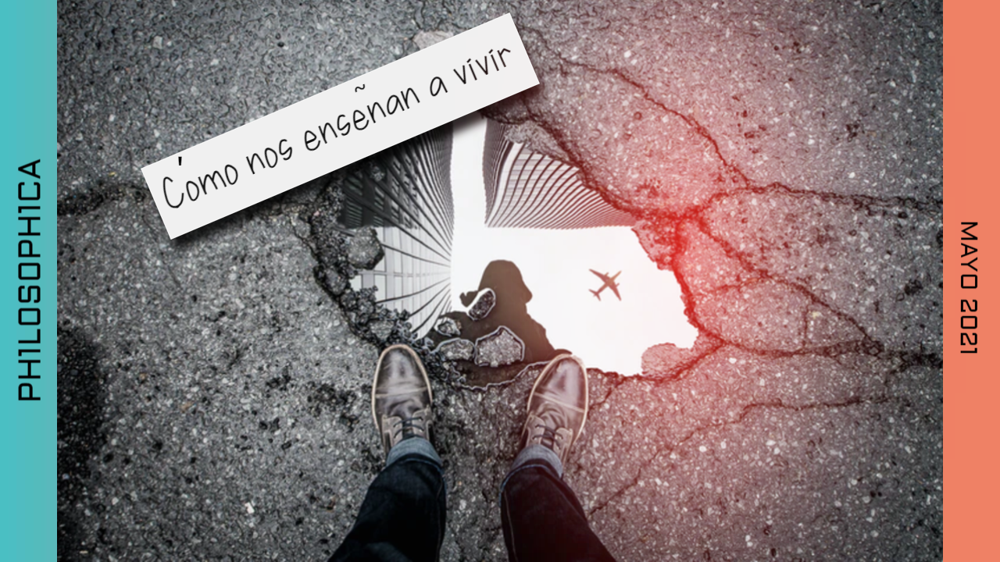

Nos han enseñado a vivir con miedo. Desde la infancia vamos descubriendo el mundo a través de una visión de temor a lo desconocido y lo desconocido termina
teniendo muchas caras que al final nos contienen.
Aquello que es distinto a mí, lo que me hace dudar, lo que me enfrenta, lo que me obliga a moverme genera resistencia e incluso rechazo, porque agita en nuestro
interior las fibras del miedo al cambio, a lo que no podemos controlar.

Nos han enseñado que todo tiene un orden, que “las cosas son así”, que hay una fila y solo hace falta aprender a formarse en ella. Nos han enseñado que lo común
es bajar la cabeza. Que no vale la pena defenderse de quien es más fuerte. A poner la otra mejilla. Nos han enseñado a vivir mutilando nuestro espíritu.
Escondiendo quienes somos en realidad, dando por hecho que no seremos aceptados. En su libro Enseñar a vivir, Edgar Morín indica que toda nuestra vida nos arriesgamos a la incomprensión del uno hacia el otro: “Hay incomprensión en las
familias entre niños y padres, entre padres y niños, incomprensión en las fábricas o en las oficinas, incomprensión de los extranjeros de los que se ignoran usos y
costumbres. La comprensión humana no se enseña en ninguna parte. Pero el mal de las incomprensiones roe nuestras vidas, determina comportamientos
aberrantes, rupturas, insultos, congojas”. Saberse incomprendido nos lleva a la soledad de no pertenecer, de no encajar; y nuestro ser colectivo nos dice que no queremos ser el extraño, así que nos
plegamos a lo ya establecido, eligiendo entonces la pesada carga de sobrevivir: contener nuestra alegría, cercar nuestra pasión, soñar muy quedo, amar apenas
por el contorno.
Vivir como una gran bocanada de aire fresco suena a locura. Dudamos que podamos ser generadores del cambio, que podamos hacer asequible la esperanza
de una vida plena. Nos arrastra el miedo interior y dudamos, decidimos mantener el orden de las cosas, aunque no nos favorezcan, aunque nos obliguen estar a la
defensiva. Sobreponerse a las estructuras mentales que nos han enseñado y que se reproducen sin cesar día a día es complejo. “¿Cómo de la nada llegar a ser todo?
--pregunta el filósofo Daniel Bensaid en su libro Cambiar el mundo-- ¿cómo una clase física y mentalmente mutilada en lo cotidiano por la servidumbre involuntaria
puede metamorfosearse en sujeto universal de la emancipación humana?” No hay respuesta fácil: Desarrollo social, educación, arte, pero fundamentalmente una
suerte de convencimiento personal de que sí puede haber otras formas de relacionarse, de ser, de vivir; que el orden de las cosas no es inamovible como
tampoco lo son nuestra manera de pensar, de sentir y actuar. _